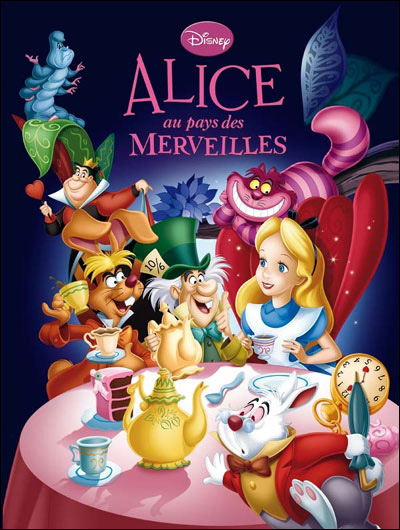

Nuit du sommeil
Alice au Pays des Merveilles
En suivant un lapin blanc très pressé, Alice pénètre au pays des merveilles, où elle rencontre les plus étranges créatures : Tweedle Dum et Tweedle Dee, une chenille férue de poésie, le chapelier toqué et le lièvre de mars qui fêtent son `non-anniversaire' en prenant le thé.
durée: 109 min

RRR